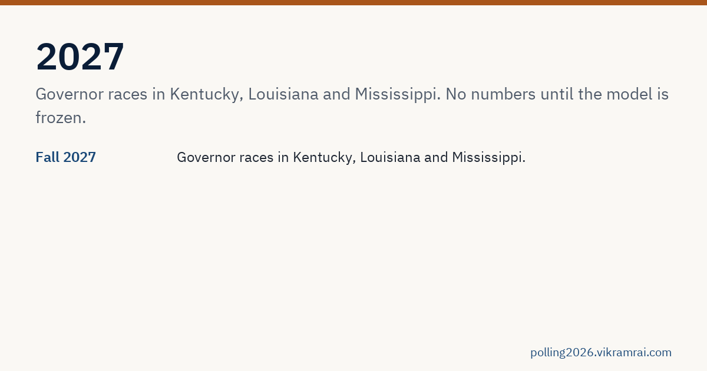

2027
Kentucky, Louisiana and Mississippi elect governors in fall 2027, the year between the midterms and the presidential election.

Nothing here is a forecast yet. The governors model is being designed and tested on past races; its numbers appear only after its design is frozen. These races are its first live run.
What is being built
Governors
A forecast for each race, tested on past governor elections and on 2026.
Design frozen before the 2027 races
Key dates
- Fall 2027Governor races in Kentucky, Louisiana and Mississippi.
Dates are added as they become known.